What happens in this class
From lecture 1 (2026/27)
"The first class will be introductory: getting to know the lab equipment, safety rules, how to use the cables — what they look like — and what the AC and DC components are. These things are better shown on the equipment." This class carries no points.
- You work in pairs; on the bench there is one power supply, one meter, one generator and one oscilloscope.
- It is worth leaving this class able to do three things: measure a voltage with the multimeter, set a signal on the generator and see it steady on the oscilloscope. The points in labs 2–6 depend on that.
Safety
The voltages in the lab are low (up to 15 V), but the oscilloscope manual warns: take care with voltages above 30 V AC (rms), 42 V AC (peak) and 60 V DC — they can cause electric shock. Do not short the supply terminals, and change the circuit with the power off.
The lab power supply (W.E.P. 1502USB)
The supply gives a constant voltage of a value you set yourself — from 0 to 15 V, current up to 2 A.

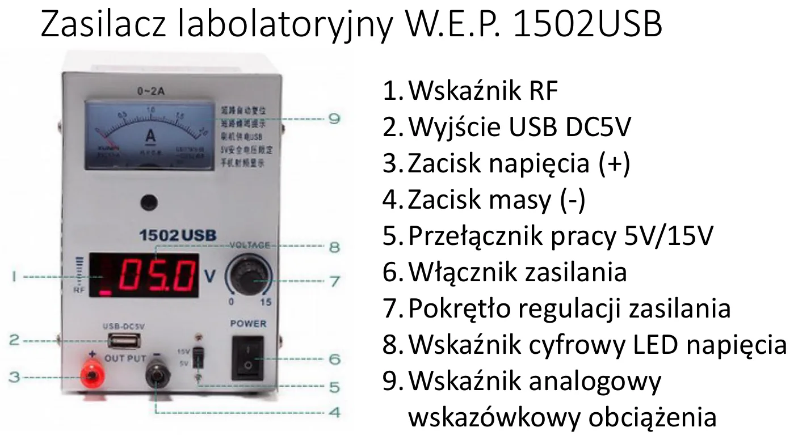
| No. | Part | What for |
|---|---|---|
| 3 | voltage terminal (+), red | the "plus" lead goes here |
| 4 | ground terminal (−), black | the "minus" lead (ground) goes here |
| 5 | 5 V / 15 V switch | operating range: 0–5 V or 0–15 V |
| 6 | power switch | |
| 7 | voltage adjustment knob | |
| 8 | LED display | shows the set voltage (resolution 0.1 V) |
| 9 | needle indicator | shows the current drawn (0–2 A) |
| 2 | USB 5 V output | the generator is powered from it |

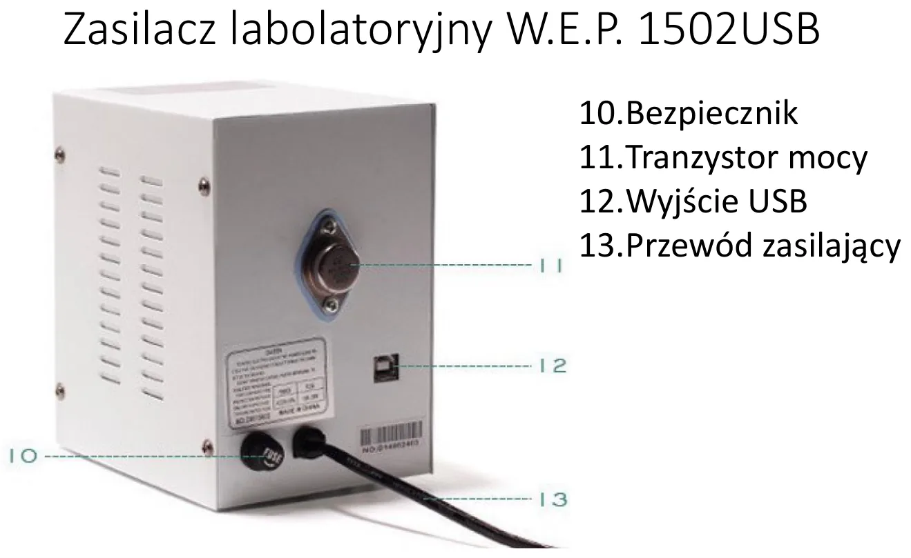
- The supply has short-circuit protection: on a short (current above 2 A) it beeps and cuts the output, and resumes by itself once the short is removed.
- The display shows the voltage only to 0.1 V — that is why the exact value is measured with the multimeter.
How to set a voltage
- Turn the knob (7) fully left to zero.
- Choose the range with the switch (5): up to 5 V or up to 15 V.
- Switch the supply on (6).
- Turn the knob while watching the display until you see the value you need.
- Only now connect the circuit — red lead to (+), black to (−).
The multimeter (DT9208A)
Next to the oscilloscope, the most important instrument. It measures voltage, current, resistance, and also capacitance, frequency and transistor gain.

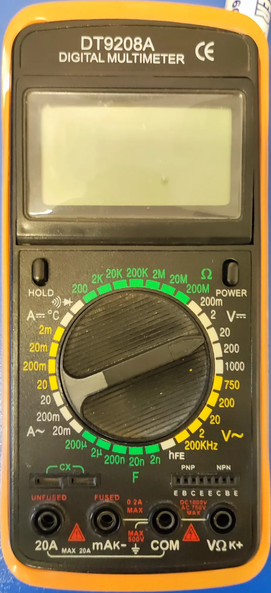
The sockets at the bottom: COM (always the black lead), VΩ (red — voltage and resistance), mA (red — current up to 200 mA), 20A (red — large currents).
| What you measure | Red lead | Dial | How to connect |
|---|---|---|---|
| DC voltage | VΩ | V⎓ (DC) | in parallel — to the two points between which you measure |
| AC voltage | VΩ | V~ (AC) | in parallel |
| Current | mA (up to 200 mA) or 20A | A⎓ or A~ | in series — cut the circuit and put the meter in the gap |
| Resistance | VΩ | Ω | to the leads of the component, with the power off |
| Continuity / diode | VΩ | diode symbol | beeps when the resistance is below about 70 Ω; for a diode it shows the forward voltage |
| Capacitance | Cx sockets | F | the capacitor must be discharged |
| Transistor | hFE socket | hFE | insert the transistor's legs according to the E, B, C labels |
Before every measurement (from the meter's manual)
- Switch the meter on. If the battery symbol does not appear, it is fine.
- Make sure the measured value will not exceed what the meter can take.
- Set the dial to the right quantity and range before touching the circuit.
- No idea what value to expect? Start from the highest range and go down.
- A lone "1" on the left of the display means over-range — switch to a higher range.
Three classic mistakes
- Measuring current in parallel (like a voltage) — an ammeter has almost zero resistance, so you make a short circuit and blow the 200 mA fuse. The 20 A range has no fuse.
- Measuring resistance in a powered circuit — the result is meaningless and the meter may be damaged.
- Leaving the red lead in the mA socket after a current measurement and then trying to measure a voltage.
The function generator (FY2100S)
The generator produces an alternating signal of a chosen shape, frequency and amplitude. In class it is referred to as DDS.

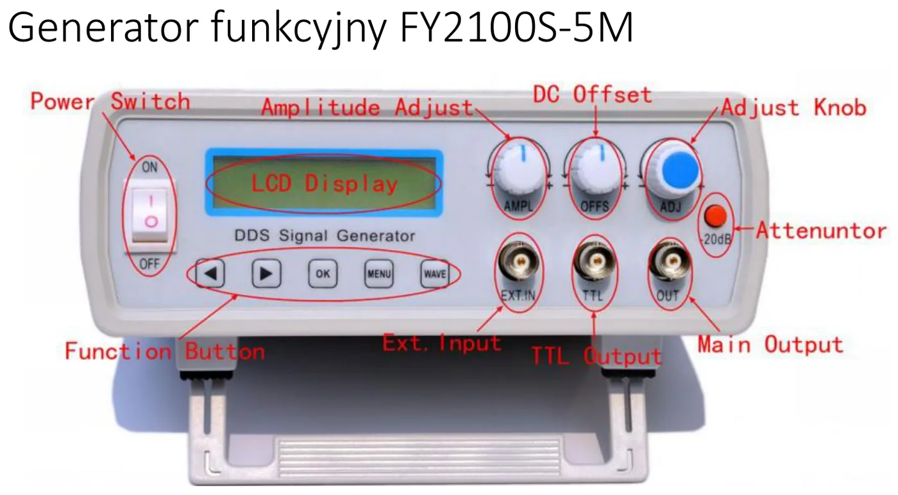
| Element | What for |
|---|---|
| LCD display | shows the frequency (F=…) and the shape (WAVE=SINE) |
| ◀ ▶ buttons | choose the digit you are changing |
| ADJ knob (blue) | changes the value of the selected digit |
| WAVE button | shape: sine, square, triangle |
| AMPL knob | signal amplitude |
| OFFS knob | DC component (shifts the signal up / down) |
| −20 dB button | attenuator: reduces the amplitude 10 times |
| OUT socket (BNC) | signal output — the cable to the circuit starts here |
| TTL socket | 0/5 V square-wave output |
| EXT IN socket | counter / frequency-meter input |
The generator is powered from 5 V over USB (from the socket on the power supply).
DC and AC components — what is that about
Every signal can be split into two parts: the DC component — its average value — and the AC component — what "wiggles" around that average. A sine of amplitude 1 V moving between 2 V and 4 V has a DC component of 3 V and an AC component of ±1 V. The OFFS knob changes only the DC component.
The oscilloscope (Twintex TOS-2020CF)
An oscilloscope draws a graph of voltage against time. It lets you see waveforms too fast for the eye — and measure their amplitude, period and shift. This model is analog, has 2 channels and a 20 MHz bandwidth.

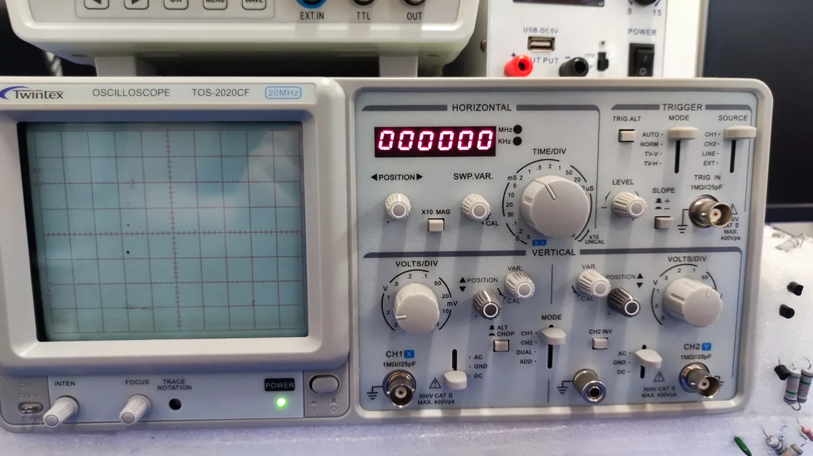
How it works

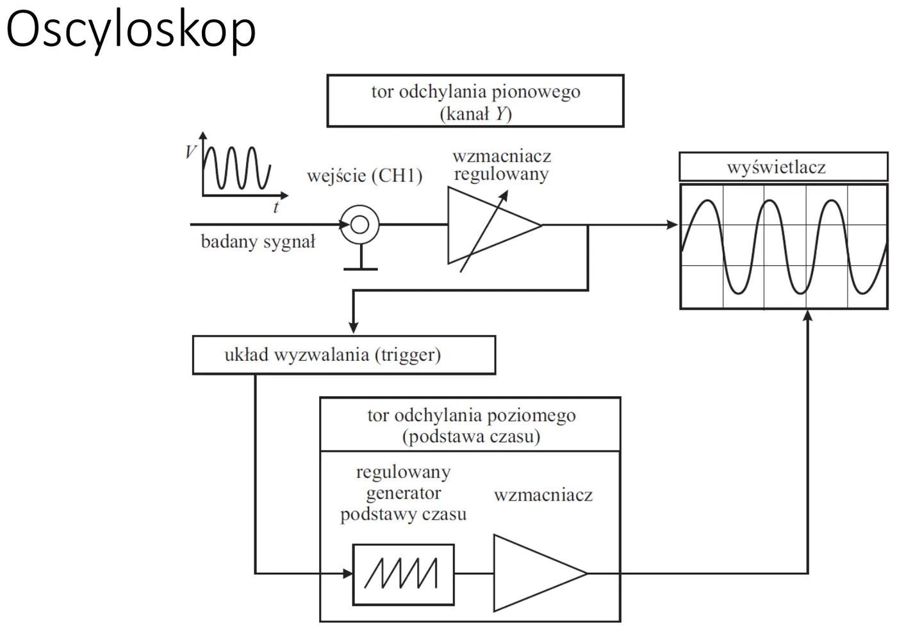
Four blocks:
- The display — a tube in which an electron beam draws a trace on the screen.
- The vertical deflection path (channels CH1 and CH2) — the higher the voltage, the higher the spot.
- The horizontal deflection path (time base) — moves the spot steadily from left to right.
- The trigger — makes sure every new "redraw" starts at the same place of the waveform; that is why the picture stands still instead of drifting.

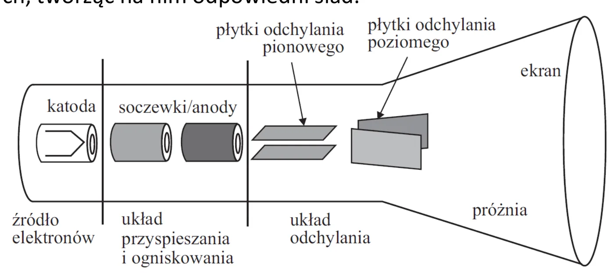
The control panel

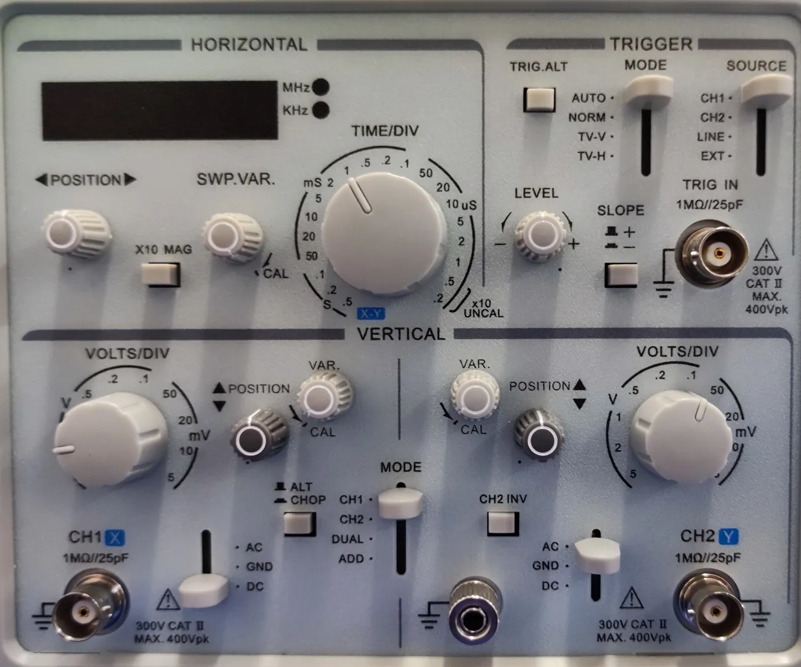
| Knob / switch | What it does |
|---|---|
| VOLTS/DIV (separate for CH1 and CH2) | vertical scale: how many volts per division |
| TIME/DIV | horizontal scale: how much time per division |
| POSITION ▲▼ | moves the trace up / down |
| ◀ POSITION ▶ | moves the trace left / right |
| LEVEL (TRIGGER) | trigger level — this is how you "freeze" a drifting picture |
| MODE (VERTICAL) | what is shown: CH1, CH2, DUAL (both), ADD (sum) |
| AC / GND / DC | input coupling (see below) |
| X10 MAG | stretches the picture horizontally 10 times |
| small VAR / CAL knob | continuous adjustment; for measurements it must be in the CAL position |

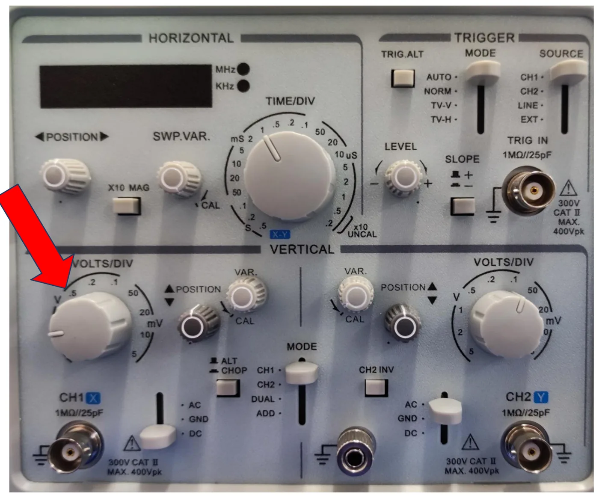

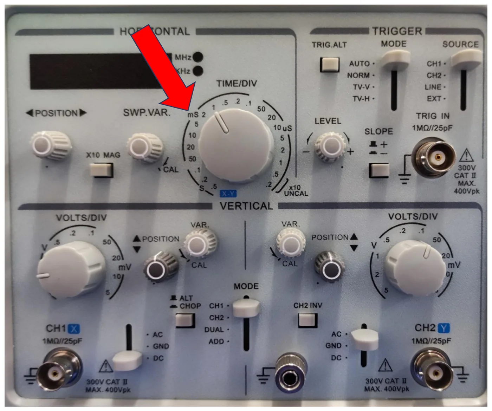

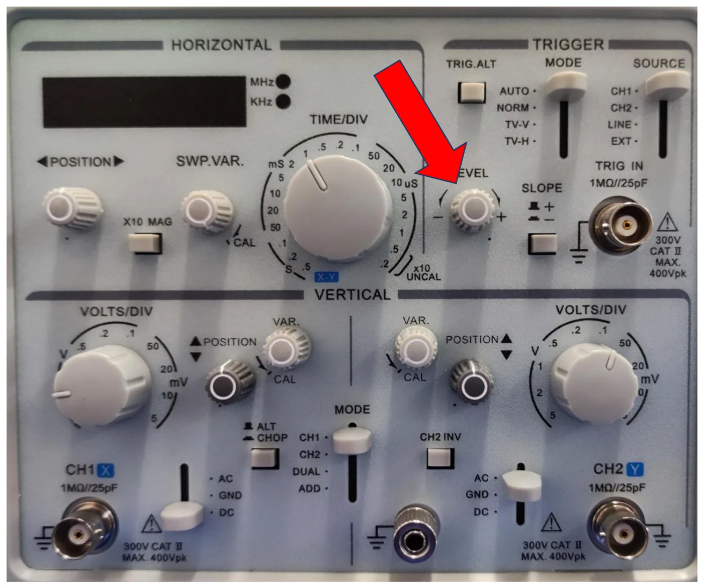

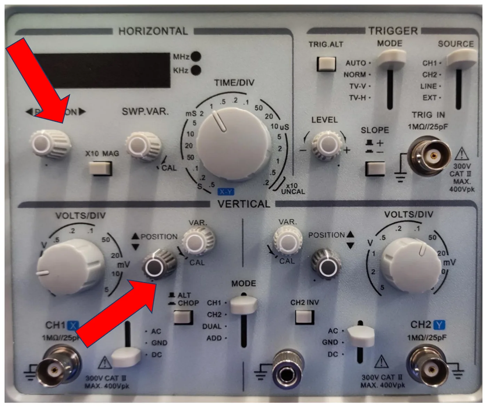
AC / GND / DC:
- DC — you see the whole signal including its DC component. Use this to measure a DC voltage.
- AC — the DC component is removed; you see only the alternating part, centred around zero.
- GND — the input is shorted to ground: the screen shows a flat line telling you where 0 V is. Put it on a chosen graticule line with POSITION before you start measuring.
What triggering is for

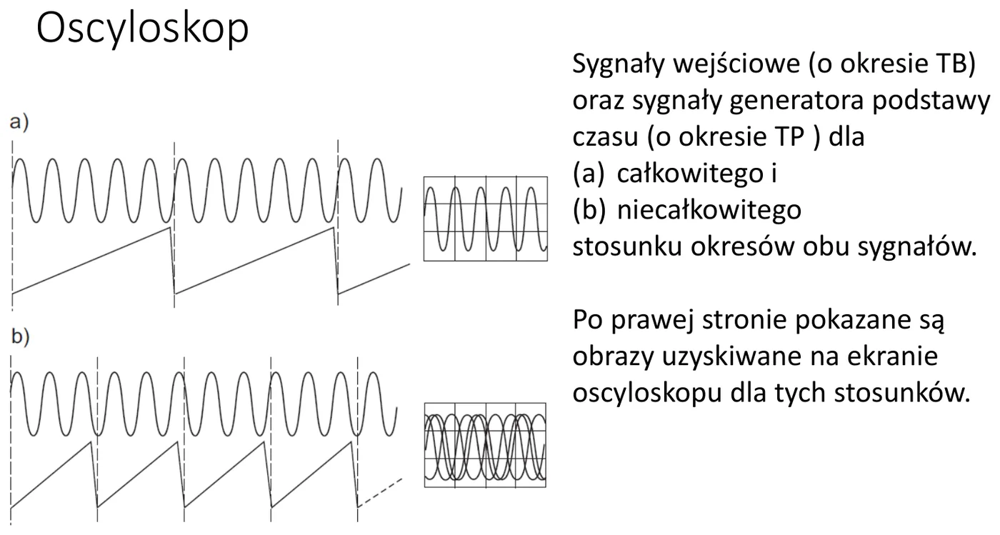
If the time-base period does not match the signal period, every redraw starts at a different place and the picture "runs away". The LEVEL knob sets the voltage at which drawing should start — the picture stops.
How to read the result
✚ My own example
A sine takes 4.6 divisions vertically from trough to peak, VOLTS/DIV = 0.5 V → peak-to-peak voltage Upp = 4.6 × 0.5 = 2.3 V.
One full period takes 5 divisions horizontally, TIME/DIV = 0.2 ms → T = 5 × 0.2 = 1 ms, so f = 1 kHz.
✚ The first five minutes with the oscilloscope (my checklist)
- Switch the scope on and wait for a line. No line? Turn INTEN (brightness) and both POSITION knobs to the middle, set the trigger MODE to AUTO.
- Set the input switch to GND and use POSITION to put the line on the centre graticule line — that is your 0 V.
- Check that the small VAR knobs are in the CAL position (otherwise the scale lies).
- Connect the signal to CH1 and switch to DC.
- Turn VOLTS/DIV until the waveform fills most of the screen vertically (but still fits).
- Turn TIME/DIV until you see 1–3 periods.
- Picture drifting? Turn LEVEL until it stands still.
Cables, connectors and the breadboard

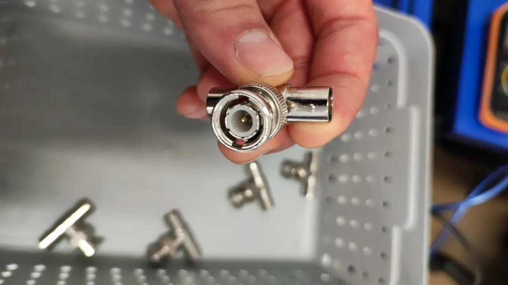

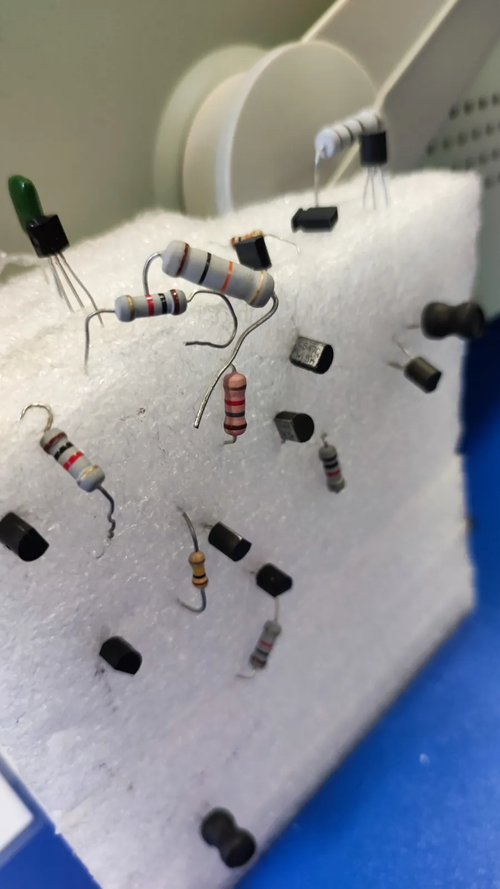
- The generator and the oscilloscope are connected with BNC cables. A cable has a centre conductor (signal) and a shield — the metal shell of the connector is ground.
- From the lecture: the metal parts of devices and the shields of BNC cables are usually connected to ground and, through the earth pin of the socket, to earth. The practical consequence: the grounds of the generator and the oscilloscope are connected together, so their "black" ends must go to the same point of the circuit.

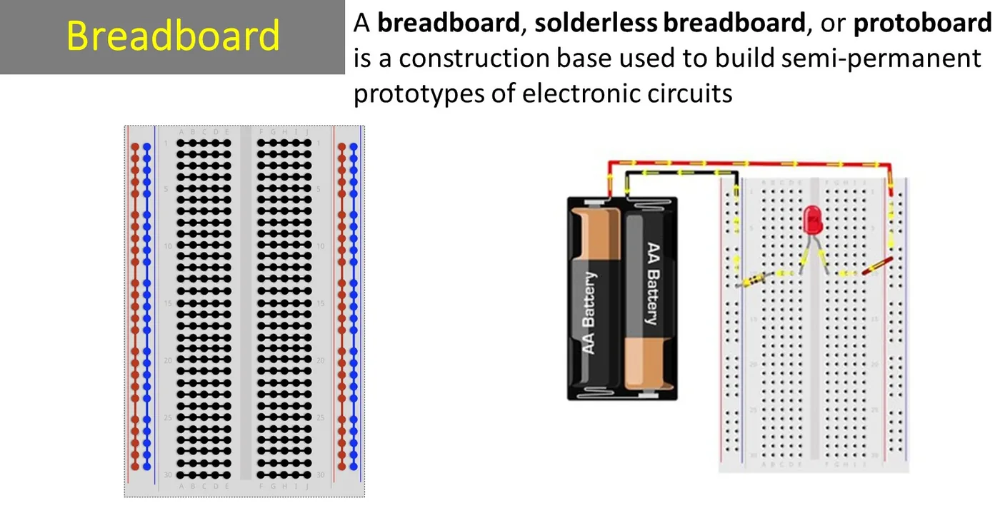
A breadboard lets you build circuits without soldering. In the middle part the holes are connected in short columns of 5; the long rails along the edges are for distributing supply and ground. Two leads pushed into the same column are connected to each other.
Worth watching (links from the lab materials)
- Veritasium: The Big Misconception About Electricity and How Electricity Actually Works — what current really is.
- The water analogy of Ohm's law.
- RS Elektronika channel (in Polish): using the equipment.
- UNSW ELEC1111: Lab Guidance — short videos on the multimeter, oscilloscope and breadboard.